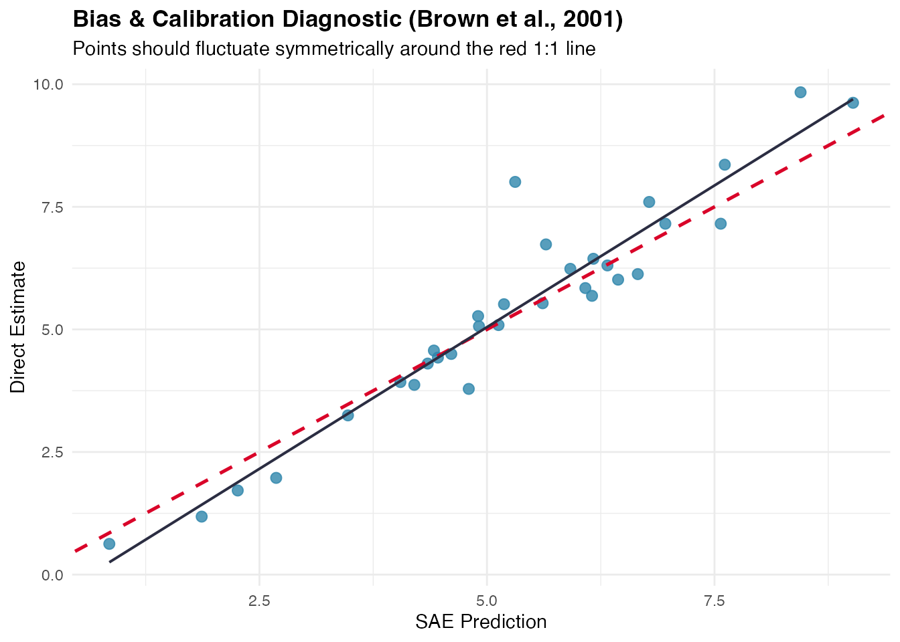
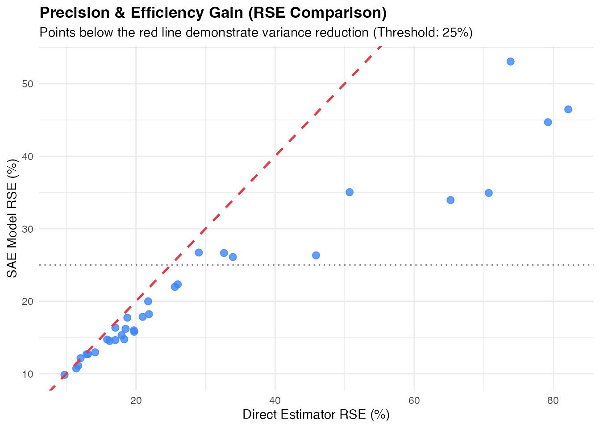
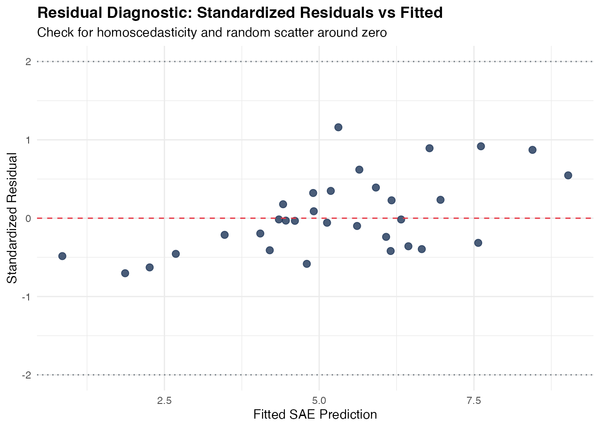
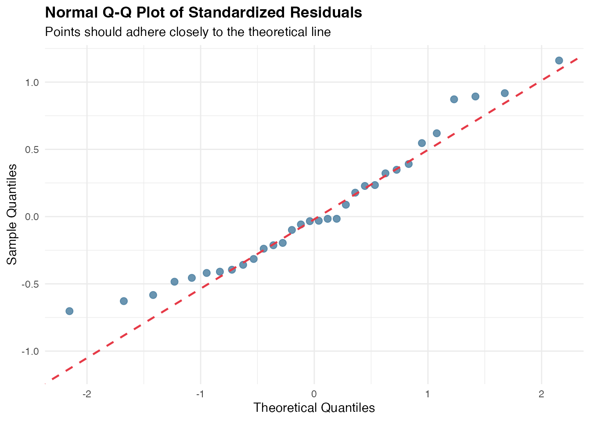
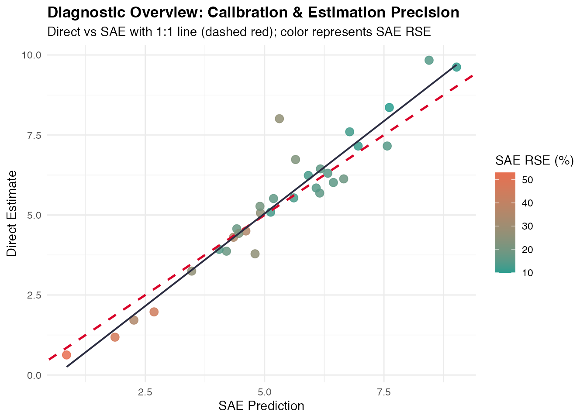

Model Diagnostics and Residual Analysis
Source:vignettes/model-diagnostics.Rmd
model-diagnostics.RmdIntroduction
In Small Area Estimation (SAE), model-based estimators borrow strength across domains and time to improve estimation precision over direct survey estimators. However, introducing model assumptions carries the risk of model misspecification, bias, and inappropriate shrinkage.
To address these challenges, fastsae provides a
unified diagnostic framework centered on the diagnose()
function and its dedicated S3 autoplot() visualization
method. It evaluates both frequentist C++ EBLUP models
(eblup_fh, eblup_sfh, eblup_stfh,
eblup_bhf) and Bayesian INLA EBP models
(ebp_area).
Core Diagnostic Criteria
The diagnostic workflow evaluates four fundamental dimensions of SAE model quality:
- Precision Gain & RSE Reduction: Quantifies the improvement in Relative Standard Error () compared to direct survey estimates. Evaluates whether areas satisfy the official statistics reliability threshold (typically or ).
- External Calibration & Bias Diagnostic (Brown et al., 2001): Tests whether model predictions are statistically unbiased predictors of direct estimates using the regression: Under unbiasedness, the joint hypothesis should not be rejected.
- Goodness-of-Fit Statistic: Computes the Chi-square diagnostic statistic : which approximately follows a distribution under the null hypothesis of proper model specification.
- Residual Spatial Autocorrelation (Moran’s I): Verifies whether spatial autocorrelation has been fully captured by the model random effects. Significant residual spatial clustering indicates that unmodeled spatial patterns remain.
Practical Example: Diagnosing a Fay-Herriot Model
We demonstrate the diagnostic workflow using the built-in
mys dataset (Mean Years of Schooling in 42 regencies):
1. Fit Model and Run diagnose()
library(fastsae)
library(ggplot2)
data("mys")
data("mys_proxmat")
# Fit Area-Level Fay-Herriot model
fit_fh <- eblup_fh(
formula = y ~ x1 + x2 + x3,
vardir = ~vardir,
data = na.omit(mys),
method = "REML",
print_result = FALSE
)
# Run comprehensive diagnostic checks
diag_fh <- diagnose(fit_fh, W = mys_proxmat[!is.na(mys$y), !is.na(mys$y)])
print(diag_fh)2. Inspect Diagnostic Components
The resulting fastsae_diagnose object provides
structured access to each diagnostic domain:
# Efficiency gains
diag_fh$precision
#> $rse_threshold
#> [1] 25
#>
#> $prop_reliable
#> [1] 68.75
#>
#> $mean_direct_rse
#> [1] 29.49003
#>
#> $median_direct_rse
#> [1] 19.72062
#>
#> $mean_sae_rse
#> [1] 21.63848
#>
#> $median_sae_rse
#> [1] 17.03635
#>
#> $eff_ratio_summary
#> Min Q1.25% Median Mean Q3.75% Max
#> 1.017672 1.194006 1.291102 1.529910 1.491337 3.907487
#>
#> $prop_gain
#> [1] 100
# Calibration test results
diag_fh$brown_test
#> $wald_test
#> $wald_test$alpha
#> (Intercept)
#> -0.7316943
#>
#> $wald_test$beta
#> pred_sub
#> 1.155679
#>
#> $wald_test$f_stat
#> [1] 3.143572
#>
#> $wald_test$df1
#> [1] 2
#>
#> $wald_test$df2
#> [1] 30
#>
#> $wald_test$p_value
#> [1] 0.05761388
#>
#> $wald_test$is_unbiased
#> [1] TRUE
#>
#>
#> $goodness_of_fit
#> $goodness_of_fit$w_stat
#> [1] 4.525856
#>
#> $goodness_of_fit$df
#> [1] 32
#>
#> $goodness_of_fit$crit_low
#> [1] 18.29076
#>
#> $goodness_of_fit$crit_high
#> [1] 49.48044
#>
#> $goodness_of_fit$p_value
#> [1] 1
#>
#> $goodness_of_fit$is_good_fit
#> [1] FALSE
# Moran's I spatial test on residuals
diag_fh$spatial_test
#> $moran_I
#> [1] -0.03722123
#>
#> $expected_I
#> [1] -0.03225806
#>
#> $sd_I
#> [1] 0.007601702
#>
#> $z_stat
#> [1] -0.6529014
#>
#> $p_value
#> [1] 0.5138198
#>
#> $no_residual_autocorrelation
#> [1] TRUEVisual Diagnostics with autoplot()
fastsae implements dedicated ggplot2 visualization types
for fastsae_diagnose objects:
1. Calibration Plot (type = "calibration")
Plots direct survey estimates against model predictions along with the 1:1 identity line and the fitted calibration regression:
autoplot(diag_fh, type = "calibration")
2. Precision Comparison (type = "rse")
Visualizes the domain-by-domain reduction in Relative Standard Error:
autoplot(diag_fh, type = "rse")
3. Residual Diagnostics (type = "residuals" &
type = "qq")
Inspect standardized residuals against fitted values to detect heteroscedasticity, non-linearities, or outliers:
autoplot(diag_fh, type = "residuals")
autoplot(diag_fh, type = "qq")
4. Combined Diagnostic Dashboard (type = "all")
Generates a unified diagnostic view summarizing calibration and precision gains:
autoplot(diag_fh, type = "all")
Diagnosing Bayesian Spatio-Temporal Models
The exact same diagnose() function applies directly to
Bayesian models fitted with ebp_area():
data("sim_area", package = "fastsae")
# Fit Spatial EBP model with BYM2 prior
fit_ebp <- ebp_area(
formula = y_gaussian ~ x1 + x2,
data = sim_area,
vardir = "vardir",
spatial = "bym2",
W = mys_proxmat,
print_result = FALSE
)
# Diagnose Bayesian model
diag_ebp <- diagnose(fit_ebp)
diag_ebp$precision
#> $rse_threshold
#> [1] 25
#>
#> $prop_reliable
#> [1] 64.28571
#>
#> $mean_direct_rse
#> [1] 103.231
#>
#> $median_direct_rse
#> [1] 17.64954
#>
#> $mean_sae_rse
#> [1] 106.1955
#>
#> $median_sae_rse
#> [1] 18.65781
#>
#> $eff_ratio_summary
#> Min Q1.25% Median Mean Q3.75% Max
#> 1.137390 1.273189 1.319751 1.326770 1.411156 1.500915
#>
#> $prop_gain
#> [1] 100
diag_ebp$status
#> [1] "CAUTION: Model goodness-of-fit indicates notable deviation from survey variance."References
- Brown, G., Chambers, R., Heady, P., & Heasman, D. (2001). Evaluation criteria for small area estimation methods. Statistics in Transition, 5(2), 185–200.
- Fay, R. E., & Herriot, R. A. (1979). Estimates of income for small places: An application of James-Stein procedures to Census data. Journal of the American Statistical Association, 74(366), 269–277.
- Rao, J. N. K., & Molina, I. (2015). Small Area Estimation (2nd ed.). John Wiley & Sons.